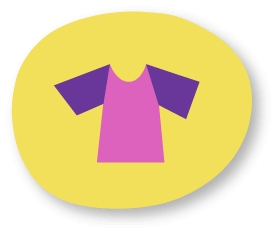
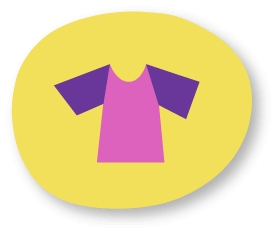

נייר
באופן כללי, נייר הוא חומר שקל מאוד להדביק אותו לדברים אחרים.
הוא סופג בקלות את הדבק, או נותן לדבק מצע טוב להידבק אליו.
הוא סופג בקלות את הדבק, או נותן לדבק מצע טוב להידבק אליו.
עם זאת, יש כמה דברים שכדאי לחשוב עליהם כשמתעסקים בהדבקת נייר:

רוצים לגלות מה חשוב לקחת בחשבון?
לחצו על השאלות כדי לחשוף את התשובות!


 
